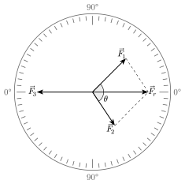
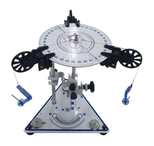
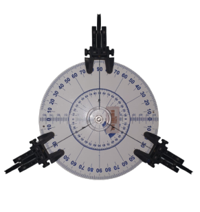

Adição de Vetores - Mesa de Forças
Introdução
Conforme Halliday; Resnick; Walker (2016), a força é uma grandeza vetorial, ou seja, além de possuir intensidade, também apresenta direção e sentido. Quando duas forças \(F_1\) e \(F_2\) atuam sobre um mesmo ponto, o efeito combinado não é dado por uma simples soma algébrica, mas pela soma vetorial. A resultante \(F_r\) dessas duas forças pode ser obtida pela regra do paralelogramo, na qual os vetores \(F_1\) e \(F_2\) formam os lados adjacentes de um paralelogramo e a diagonal representa a resultante.

Matematicamente, para duas forças que formam um ângulo \(\theta\), o módulo da resultante é dado por:
\[\begin{equation} F_r = \sqrt{F_1^2 + F_2^2 + 2 F_1 F_2 \cos \theta}\label{eq-paralelogramo} \end{equation}\]
Para que o sistema esteja em equilíbrio, é necessário aplicar uma terceira força \(F_3\), de mesmo módulo que a resultante \(F_r\), porém de sentido oposto: \(\vec{F_3} = -\vec{F_r}\).
Esse princípio tem diversas aplicações práticas, como no cálculo de forças em cabos de pontes e estruturas, na análise de forças que atuam sobre um corpo suspenso por fios em diferentes direções, e no equilíbrio de objetos submetidos a tensões em máquinas simples.


O experimento da mesa de forças, ilustrado na Figura 2 permite compreender de forma visual e prática como a soma vetorial se manifesta no mundo real e como o conceito de equilíbrio está diretamente ligado ao princípio da adição de vetores.
Objetivos
Apresente de forma clara e objetiva o que se pretende alcançar com a atividade experimental, utilizando verbos de ação como
- Compreender que a força é uma grandeza vetorial;
- Aplicar a regra do paralelogramo para determinar a resultante de um par de forças;
- Determinar experimentalmente o valor de uma força que equilibra duas outras forças;
- Determinar graficamente a resultante de duas forças pela regra do paralelogramo.
Material necessário
- Mesa de forças composta por um transferidor de ângulos e base de fixação;
- 03 polias móveis;
- Conjunto de massas e suportes;
- Fios.